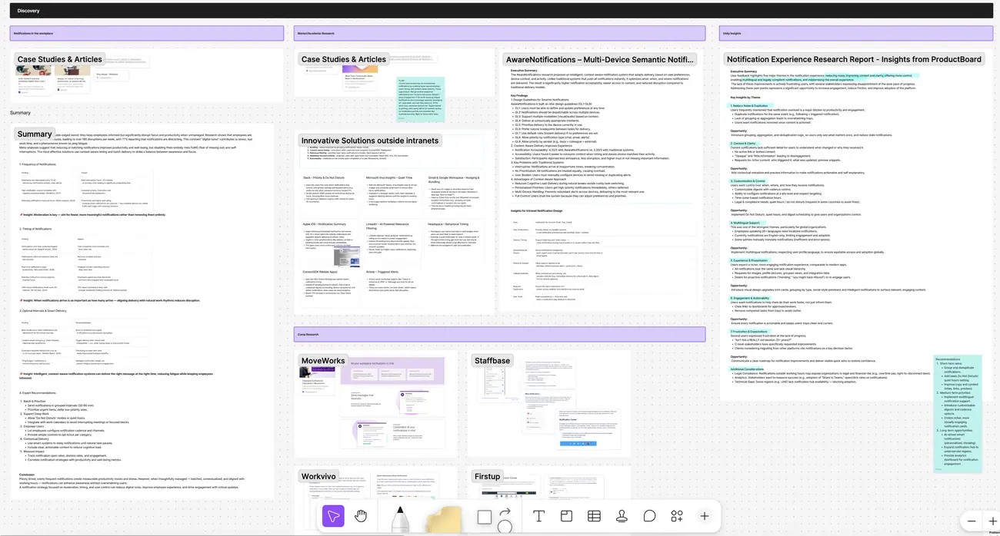
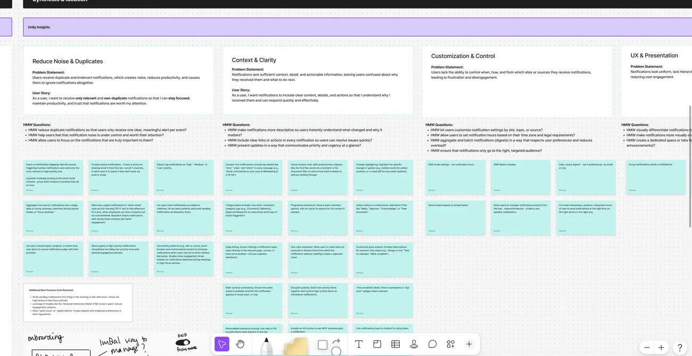
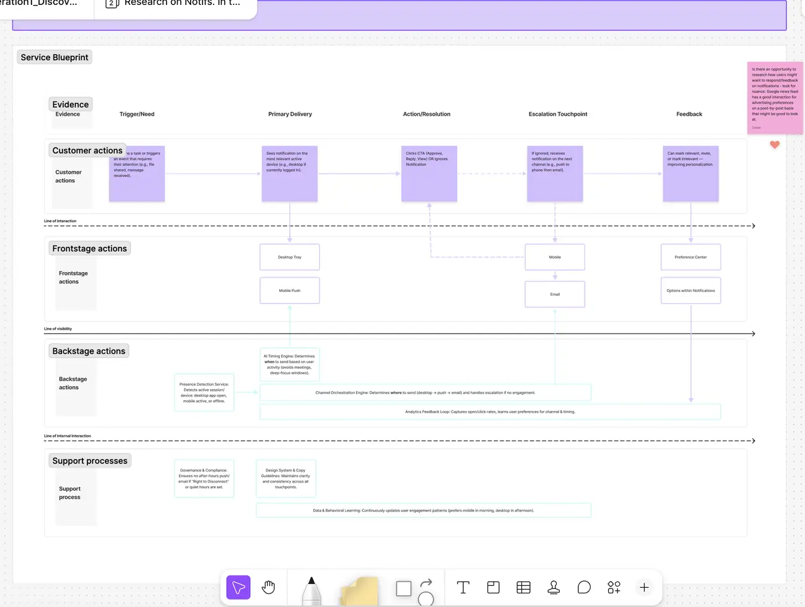
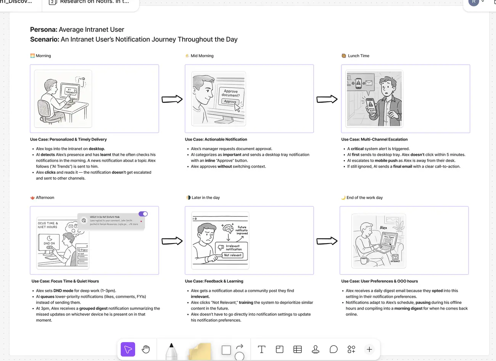
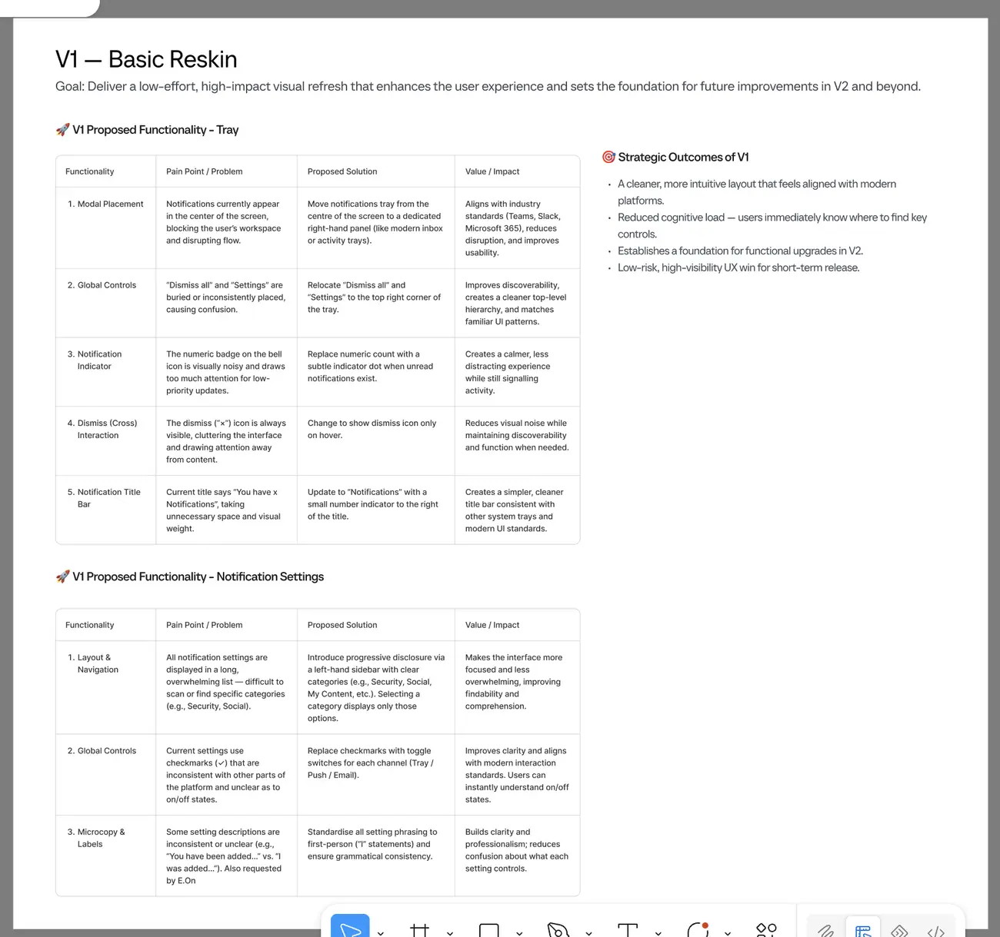
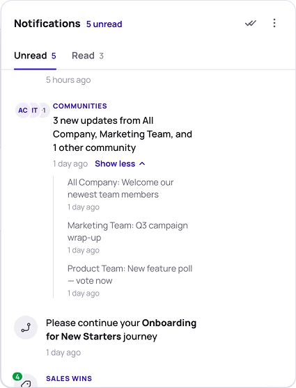
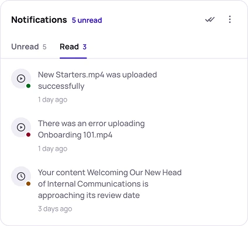
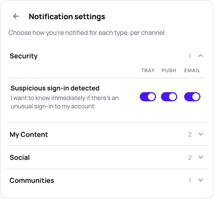
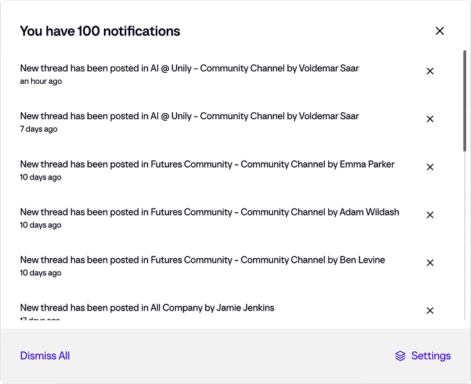
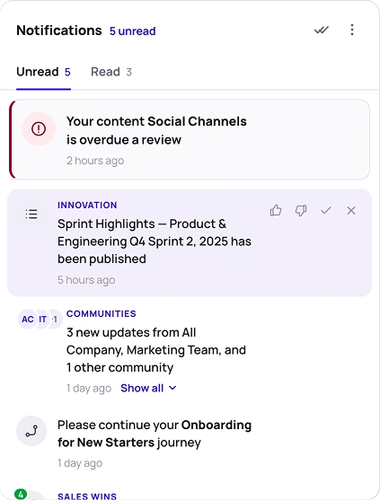

What to ship first when everything is broken
A ground-up redesign of the platform’s notification experience, from a flat tray nobody trusted to a context-aware system that decides what to send, when, and to which device. Sequenced across three releases — because the users who most needed the ambitious version were the ones angriest about the basics.
A productivity tax nobody was measuring
Notifications keep employees informed, and unmanaged they systematically destroy the focus that makes the information useful. Employees are interrupted every 10 to 30 minutes — more than 160 disruptions a week — and 77% report finding notifications distracting. Each interruption costs roughly 23 minutes of recovery.
On our own platform it was worse than generic overload. Users couldn’t tell what a notification referred to or why they’d received it. Duplicates arrived for the same event. The tray didn’t refresh, so nobody trusted it. A security alert looked identical to a comment on a post. And everything arrived in English, on a platform serving organisations with employees speaking 26 or more languages.
Underneath all of it, something more corrosive. One piece of stakeholder feedback read simply: “Isn’t this a REALLY old ideation (3+ years)?” Clients evaluating whether to migrate away were citing notifications as a decision factor. This wasn’t only a design problem about interruption. It was a credibility problem about delivery.
Frustration & expectations
- “Isn’t this a REALLY old ideation (3+ years)?”
- C-level asking for it by name
- Clients cite it when they weigh up leaving
Noise & duplicates
- Two notifications for one event
- No grouping — trays overwhelm
- Still there after you’ve actioned it
Control
- Digest cadence, site-level config
- Hours that follow your time zone
- Quiet hours: a legal requirement in some countries
Three streams that would each have given a different answer alone
Academic work on interruption. Mid-task interruptions cause the largest performance hit, increasing both completion time and error rates. Real-time notifications reduce deep work. Batched hourly digests improve focus.
Market and competitive analysis. Five patterns recurred outside the intranet category: bundling, context-aware timing, relevance filtering, wellbeing controls, and actionability from within the notification itself.
Internal user and stakeholder research. Seven themes, the seventh of which was really about trust — frustration at the pace of progress.
The counterintuitive finding is the one that shaped everything: turning notifications off doesn’t work. Silence triggers fear of missing out and compulsive self-checking. The effective interventions are batching, context-aware timing and user control. Moderation, not removal.

Eight problems, and one that makes the others worse
Rather than carry seven research themes into design, I wrote eight problem statements, each with a user story and a set of How Might We questions — so the team was solving stated problems rather than reacting to feedback.
Problem 8 was notification settings themselves: so numerous that nobody ever personalised anything. It matters most because every fix for problems 1 through 7 is tempting to solve with another setting, and each new setting makes 8 worse. Naming it early is what stopped the design defaulting to configuration.
One more reframe changed the priority order. Notifications sent outside working hours carry real financial exposure in right-to-disconnect jurisdictions — so quiet hours weren’t a wellbeing nice-to-have but a compliance requirement with a business case attached. That is what got it prioritised.

A notification that chases you, rather than broadcasting at you
The core mechanic is a delivery ladder. It goes to the desktop tray first, if you’re there. Unopened, it escalates to mobile push. Still ignored and important enough, it becomes an email with a clear call to action.
That ladder is what makes moderation possible: because the system can escalate when something is genuinely urgent, it can afford to stay quiet about everything else.
Four services sit behind it, none visible to the user — a timing engine that learns engagement patterns and avoids meetings and deep focus, presence detection that identifies which device is actually in use, channel orchestration that handles escalation, and an analytics feedback loop that refines both over time.

The settings problem, solved by never opening settings
Morning: Alex logs in on desktop. The system has learnt he checks notifications then, so a news item on a topic he follows arrives there. He reads it; it never escalates.
Lunch: a critical system alert fires. Tray first. No click within five minutes, so it escalates to push. Still ignored, it becomes an email.
Afternoon: he sets Do Not Disturb for deep work, one till three. Likes, comments and FYIs queue rather than send. At three he gets one grouped digest of what he missed, on whichever device he’s actually using.
Later, a community post is irrelevant to him. He marks it “not relevant”, which trains the system to deprioritise similar content. He never opens settings — preference-setting becomes a by-product of use rather than a configuration task.

The visionary version would have meant another long silence
The research pointed at an ambitious system: context-aware timing, AI escalation, behavioural learning. Correct destination, long build. Meanwhile the loudest feedback was about things that were simply broken — a tray that didn’t refresh, confusing read states, a modal that blocked the workspace. Users had been raising those for three years.
So I split the strategy into three independently releasable parts. V1 — layout and placement: move the tray from a centre-screen modal to a right-hand panel matching the pattern people already know from Teams and Slack. No backend work, visible the day it ships. V2 — reliability and comprehension: auto-refresh, consistent read states, bulk actions, context labels, error handling, accessibility and performance. V3 — intelligence: the timing engine, presence detection, orchestration, digests and multilingual delivery.
The argument made to stakeholders was that V1 buys back the credibility that makes V3 fundable. A low-risk, high-visibility release proves movement to an audience that had concluded there wouldn’t be any.

Smart defaults and in-line feedback, not more settings
Giving users granular control over every notification type was the obvious answer, and it would have made the eighth problem worse — every new control makes configuration less likely to happen at all.
Instead: smart defaults, plus a “not relevant” action inline in the notification itself. Preferences get learnt from behaviour rather than configured in a settings screen nobody opens.
What shipped, and what it’s judged on
This is a sequenced release rather than a finished product, and the numbers that matter aren’t all in yet.
The measures worth tracking were set upfront: tray engagement and open rate, dismiss rate, settings-completion rate, and notification-related support ticket volume before and after.
The strongest qualitative signal available is probably a client one — notifications were being cited as a migration risk, so a changed client conversation is worth more here than an engagement percentage.
What the tray does now



The same inbox, either side of the redesign
Before, every event produced the same line. A hundred of them, undifferentiated, ordered by nothing but age, with dismiss-all as the only realistic action. After, five unread: sorted by type, grouped where they belong together, and the one that actually needs a decision sitting at the top of the list.

